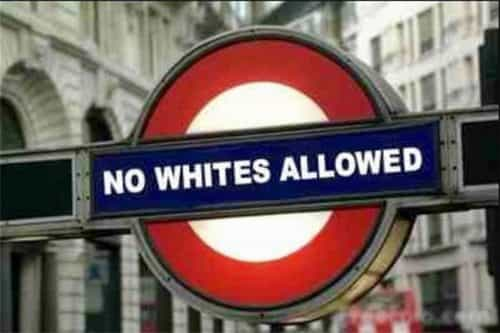
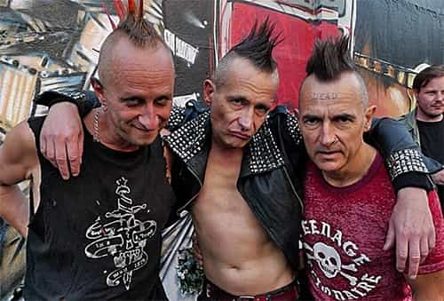
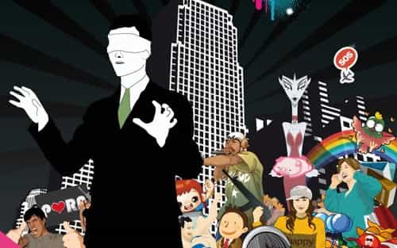

André is a young European who left his decaying country in 2012 for greener pastures. He enjoys exploring subterranean places, reading about a host of interconnected topics, and yearns for Tradition.


Years ago, when I struggled to get rid of my own leftist conditioning—such as automatically considering “equality” as good and such-and-such-“isms” as bad—I noticed a rather peculiar phenomena: every time a SJW talks, he or she always uses the same words and repeats the same catchphrases like mantra.
“As we live under masculine domination…” or “machismo kills, feminism doesn’t”—which, by the way, are both untrue—appear every time in their posts, at the beginning of everything they say. Post after post, they always use the same semantic gear. “Patriarchy”, “privilege”, “gender”, “heteronormative”… Those people seem completely locked up inside their own discourse.
For a moment I almost pitied them. Then I realized how much they foster and are responsible for degeneracy.
A motivated, organized, intolerant clique among a disorganized and divided society is a timebomb. Members of the wimpy majority will rather negotiate and surrender, especially over small things, than risk getting bullied by the aggressive clique with no one around daring to defend them. History of the last decades follows closely the maneuvers of these vanguards in a permissive environment. Muslims managed to make everyone eat halal, as the slaughterhouses would rather do everything halal than two separate slaughter tracks. The same way, SJWs pushed their crazes and framings in the mainstream: they may be locked inside their own perspective but also succeed at locking us in it, too.
To stop aggressive leftists from helicopter guiding people and culture, we have to not only show the falsehood of their pretended issues or the reality and legitimacy of ours, but to dismantle the very frames they brainwashed us with to condition our views. Last week, I briefly did this with “equality”, “social justice” and “open-mindedness”—the way they use it—, and now we’re tackling some more.

Initially, tolerance means the capacity or habit to put up with something unpleasant or unlikable. One tolerates something on the grounds that one cannot act on said thing without creating greater problems, so tolerating is the least bad outcome available, or that one cannot act on said thing at all. In other words, tolerance means resignation.
When it comes to religion, culture, or politics, a plea for tolerance is an intimation of passivity. When X asks Y to be more “tolerant”, he is asking Y to let him do more while also implicitly accusing him to be “intolerant.” If Y falls into the trap, Y will defend himself from the accusation despite the fact that he hasn’t actually done a thing, will remain passive and insecure, whereas the one who pretended to be victim of “intolerance” and asked for “tolerance” will have more room to further his own interests.
Historically, Y is the one who loses. In the course of the eighteenth century, so-called Enlightenment intellectuals repeatedly asked for more tolerance from the Catholic Church whereas they were promoting irreligious ideas that rejected both the throne and altar. The cultural bath they created allowed for the emergence of a violent upheaval, the Revolution of 1789. Thus was the “tolerant” and weak Ancien régime shattered in blood by aggressive, noble- and divine-hating Sans-culottes. In all likelihood, had the Catholic Inquisition been a real thing, the secularist Revolution would have never happened—it would never have gathered the forces and opportunities to topple the social edifice.
Dispossession, passivity, and being bludgeoned into “toleration” all go together. No one asked the feminists or BLM activists to be “tolerant.” In the name of fighting intolerance, Leftists have always been the most aggressive and intolerant of all political factions. It is a perverse game where the one who holds, so the speak, the sword of “tolerance” can do anything while accusing his victim of “intolerance.”
When Boasians and other biology-denying leftists took over the colleges, whites got punished for having gathered a thorough, scientific anthropology. Boasians demonized relevant issues around heredity and screamed “racist!” at anyone thinking there is more than environmental effects in men’s nature. “Racism”, then, was attributed to whites only, making the race card a purely anti-white thing. Conservatives have so much internalized this they sometimes still talk about “reverse racism” when they notice blacks attacking white people on the grounds of their skin color.
“Antiracism” is, basically, anti-whiteness. It does not exist outside the Western world. Africans can be Afrocentric, Asians are allowed to identify with their countries, and only the West is condemned to the melting-pot boil. “Antiracist” leagues and personalities constantly ignored anti-white prejudice, attacked those who denounced anti-white racism, supported race-baiters and sometimes openly gloated about the population replacement we are undergoing.
Of course, like most other leftist framings, “antiracism” covers a consummate hypocrisy: if whites are so “oppressive”, why insisting to live in white countries? And what is the problem with whites having their own interests? Everyone has. We have legitimate interests and rights too. Isn’t deeming our interests intrinsically “oppressive” the kind of essentialism that leftists pretend to reject in the name of antiracism? Pseudo-antiracists stay because they are only too happy to steal and destroy what we built while also nourishing their own wicked righteousness.

Just as “equality”, this one originally had a quantitative meaning. When citizens choose between two candidates at an election, their choices pile into two sets, and the candidate with the greater set wins. The more numerous are a majority, the less so are a minority. Nothing more. Some thinkers, from David Hume to Simone Veil, noticed that the enshrining of divisions into permanent political parties cut at the very root of sociability, as parties tend to muster activists, thus dividing the population into rival factions.
Nowadays, a “minority” refers to an identity built on the model of the Marxist class: a “minority” is a purportedly dominated or “oppressed” group with specific interests. The minoritarian identities have been mostly built by skilled agitators: women did not think of themselves as a separate, not to say antagonist group before mentally sick lesbians and other misfits spun it to them. It is crucial to distinguish between minoritists—seditious agitators who pretend to speak in the name of a particular social category—and purported “minorities”—that mostly existed in the imagination of minorists before they were engineered at a mass scale.
Minoritarian identity is inherently accusatory and conflict-prone, as it is based on purported wrongs that ought to be avenged repaid. No “minority” can exist without dividing society as a whole and harming general sociability, the same way than a class in the specifically Marxist sense finds its identity into asserting a separate interest at the expense of the other members of society. Does it not speak for itself that Have-It-All™ fat, overrated, pampered women in power suits complain about bogus issues or invent a “rape culture” out of thin air when more and more men struggle for less and less?

When the baby-boomers were young, they celebrated themselves as different from and cooler than what had been before. Now, the baby-boomers are quite old, but the mainstream culture keeps reflecting their views. One of the strains of said culture seems to follow a “youth cult”, and if you look closely, the cult is rather strange: “young” is the thuggish, pro-graffiti, hip-hop culture, “young” are leftists even when they are actually old, “young” are the cougars. Only conservatives and former nice guys are not young.
“Youth” is for the baby-boomers and their appointed ideological heirs. “Youth” is what they define as such, not what is actually young in age. “Youth” cultists have indeed no problem deriding the young who don’t fit their warped definition of youth. 15-year-old 4chaners are “losers” without age and 35-year old hipsters are fresh.
I have noticed a related phenomenon: cunning old men doing a big show of exhibiting signs of youth, such as sporting a leather jacket and tattoos, conversing about rap and video games, then either using their own superior sexual market value to pick up millennial girls—at the expense of millennial guys—or remembering they are older to justify lecturing us about the life conditions of today that they mostly don’t know.
These are all positive words whitewashing people whose presence is at best an embarrassment, at worst an act of aggression. Illegal immigrants are so because, by coming or staying without authorization, they disrespect the law and commit a crime. Eventually they try to get rewarded for their crime by getting regularized. Then, they
All this is put aside or downright denied by wishful thinking. I suggest we push for the truth by simply calling them what they are—invaders, criminals, unfair competition, illegitimate replacement.

Another buzzword that covers at the same time an immature, pathological view of reality and a lot of hypocrisy. First, the existence of limitations is normal and consubstantial to the world we are living in. Limitations suppose differences, exteriority, and ultimately exclusiveness: only a finite set of beings are inside, the rest is outside. The problem came with modernity refusing boundaries as if they were evil, either through a capitalism that would force reluctant countries into globalized trade or through a socialism that pretended to convert everyone to its own notion of “justice.”
The rejection of all boundaries, the desire to blend everything with everything, shows a child-like view. Mature adults accept the existence of limitations, if only so that they can focus on the interests of their own instead of balancing between ruthless selfishness and self-identification with some fashionable “cause” from the other end of the world.
Second, when the Left argues for inclusiveness, they are as hypocritical as when they ask for tolerance. Their notion of inclusiveness means including shades of Leftism, urban groups, professional victims, celebrities… and do as if it was “inclusive” when the majority of Westerners are actually pushed aside, thanks to globalization and anti-white charges. Ultimately, the pseudo-inclusive Left excludes swiftly and silently its non-members while accusing them of being responsible of their own exclusion, so that it can maintain its pretense at “inclusiveness.”

In the aftermath of the 1789 Revolution, the German philosopher Immanuel Kant came up with the word “Enlightenment” to sell the loose intellectual fermentation of the eighteenth century as a positive phenomenon. “Enlightenment”, Kant said, is about emancipating oneself from higher supervision. Following the usual eighteenth century narrative, this meant freeing the merchants and bourgeois from spirituality and nobility. Of course it wasn’t long before later thinkers like Karl Marx took up the idea and applied it, not to the third caste—the free, self-owned producers—but to the fourth—the servants unable to be trusted with owning their livelihood.
“Emancipation” in the early Leftist thought was the rejection of a traditional caste order, the desire to smash down all boundaries. “Emancipationists” pretended they acted in the name of “justice”, “progress” and other feel-good words, but in truth their views ushered in a jumble impossible hopes, tyrannies—as one’s boundaries are his neighbours’ landmarks—, passes for envy and greed, self-complacency, utter disrespect for traditions and cultural identities, professional victimhood and blackmailing, not to forget the Have-It-All™ lifestyle.
Judging by the comments under some of my former critical pieces, it seems like all of us do not tackle the problem from the same point of view. Some are unwilling to recognize the importance of such or such actor in the chaotic metapolitical struggle of the twentieth century. Some seem uncomfortable with the traditional point of view as it is associated with castes groups. Whatever our disagreements, I think the main if not only enemy is cultural Marxism, and we ought to focus on dismantling it, here, on social networks, on the media, in mainstream culture… in other words, everywhere, until it collapses under the weight of its own past credibility.
Read Next: 6 Leftist Concepts That Pretend To Be Positive But Are Not